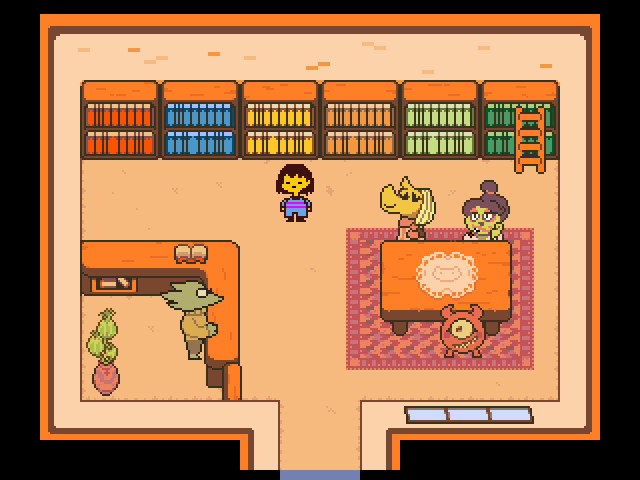

把 Undertale 通关变成一条流水线：我每年必走的三遍流程
一个每年完整通关三次 Undertale 的玩家，用文档站、网盘和笔记软件搭出一套零返工的通关流水线，从第一次进地下世界到真和平线全结局，每一步都不踩旧坑。
我每年固定要把来自undertale官网的这款像素风叙事游戏完整通关三遍——第一次和平线、第二次真和平线、第三次屠杀线。以前这是个到处跳脚的事：雪町拼错的图书馆招牌记不住在哪、美达顿 EX 收视率冲到多少才算赢、Linux 上 32 位库怎么装……每次都要去搜索引擎翻三四个不同的攻略站，存档备份也总是漏记覆盖了哪一版。
现在我把它嵌进了一条固定流程，从头到尾不碰临时搜索框，三路线一次性走通。具体怎么接，这篇就讲清楚。
旧流程卡在哪
以前的模式是"玩到哪搜到哪"：进雪町忘了约会帕派瑞斯，现搜"帕派瑞斯约会怎么触发"；打美达顿 EX 收视率 8000 就收了，后来才知道腿在场上得冲到 12000；换了 Linux 笔记本想玩，直接启动报缺库，现查 32 位运行库的安装命令。
痛点有三个：一是碎片化，搜索引擎给的攻略质量参差不齐，有的是 2015 年的老版本，有的漏了真和平线的前置条件；二是存档管理乱，和平线打了一半切到屠杀线，覆盖了存档才反应过来两条线是互斥的；三是环境切换成本高，Windows 上玩到一半换 macOS，手柄没反应了才想起 GameMaker 在 Mac 上不支持手柄这个老坑。
新流程：文档站 + 网盘 + 笔记
核心思路是把"通关 Undertale"这件事当成一个小项目来管理，用三个工具串起来：
文档站当唯一权威源。所有攻略参数、环境配置、存档位置，我都直接查 undertale文档 里的内容——从雪町的约会触发条件到美达顿 EX 的收视率门槛，从 D3D9 显卡报错的三步排障到 Linux 32 位运行库的具体安装命令，全在那一个站里，不用在搜索引擎里反复横跳。第一次进地下世界之前，我会花 20 分钟把文档站的目录过一遍，把三条路线的关键分叉点都记下来，后面玩的时候遇到疑问直接跳对应章节。

网盘存存档快照。Undertale 的存档是单个文件，默认位置在游戏目录下。我在流程里加了一个定时快照：每打完一个 BOSS 就把存档文件复制一份丢进夸克网盘，命名规则是"路线名 + 当前位置"，比如"和平线-打完帕派瑞斯"。这样和平线打了 20 小时想切屠杀线？先把和平线存档快照拉下来备份，再启动屠杀线。以前覆盖存档丢了 12 小时进度的事，再也没发生过。
笔记软件记分支触发条件。真和平线的触发条件是最容易漏的——需要做完帕派瑞斯约会、安黛因约会、艾菲丝信件事件、真实验室四个前置，少一个都进不了。我把这四个条件整理成一张清单贴在飞书笔记里，每做完一个打勾。以前玩到最终结算才发现漏了艾菲丝的信，又得从 CORE 重打一遍。现在打勾完直接往下走，省了至少两次来回。
两个最容易断链的环节
这套流程跑了三年，有两个环节特别容易踩坑，得盯紧。
第一个是环境切换。我有三套设备：Windows 台式机、MacBook、Linux 笔记本。每次换设备安装时都从undertale下载拿对应的版本包，但 Undertale 在三个平台上的兼容性差异比我预想的大：Mac 上手柄完全没反应（GameMaker 引擎原生不支持，官方 FAQ 都承认修不了），只能用键盘；Linux 是 32 位程序，64 位发行版必须先装 32 位运行库，少装一个库启动就闪退；Windows 偶尔会报 D3D9 显卡初始化失败，关掉 Chrome 再开游戏就能过。每次换设备前，我会先查文档站的报错处理章节，把目标平台的已知问题过一遍，省了现场搜排障方案的时间。
第二个是存档快照的时机。Undertale 的存档点（也就是那个闪着星星的蓝色灵魂）分布不算密，有些 BOSS 战打完到下一个存档点之间有一段剧情推进。如果这段剧情里你发现自己走错了路线，回退成本很高。我的做法是把快照频率拉到"每进一个新区域就拍一次"，比如从雪町出发去瀑布前拍一张、从瀑布去热地前拍一张、进 CORE 前拍一张。这样真走岔了，最多回退一个区域的进度，不会整路线返工。

效果与边界
这套流程带来的效率提升是可数的：以前三遍通关总共要 40 小时左右，其中至少 6 小时在搜攻略和找存档；现在总耗时 32 小时，搜索时间压缩到 30 分钟以内（就是开工前过目录那 20 分钟 + 遇到罕见情况查文档的 10 分钟）。存档快照也帮我避免了两次大规模返工——一次是和平线快结局时误覆盖，一次是屠杀线打到 MTSS 切不回真和平线。
但这套流程不是对所有人都划算。如果你只想玩一遍和平线体验剧情，或者对路线分叉完全不关心随遇而安，那花 20 分钟过文档目录 + 搭存档快照机制就是纯粹的 overkill。它的价值只在两种场景：你想跑遍所有路线、或者你像我一样每年都要回来刷一遍，想把重复劳动降到最低。
最后说一句：Undertale 的官网不是随便找的——它的文档站是我见过对玩家最友好的一份，从键位表到 D3D9 报错三步排障，每个细节都写得清清楚楚，甚至连"飞机变小了是不是 bug"这种梗都正面回应了。真要搭自己的通关流程，从它的文档站开始就对了。这些玩家向的整理我也顺手备份到了GitHub、Gitee和GitCode三个仓库，怕哪天文档站挂了没人管，总有一个能打开。